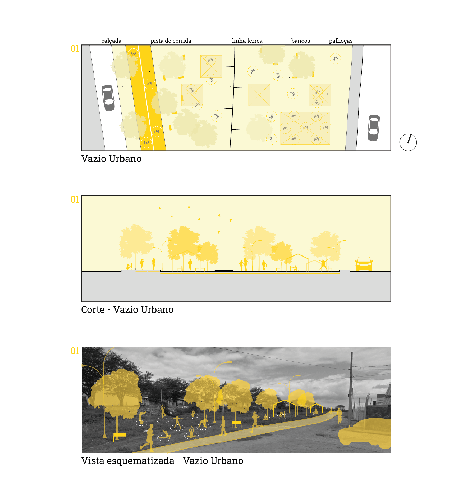

©2017 LabRua
Template: Bootstrapious
+ Kishan B

Territórios vulneráveis e COVID-19: Diretrizes para o Pedregal
2020-25-08; covid19, territorios-vulneraveis, diretrizes, pedregal
Muito se tem falado sobre os desdobramentos da pandemia da Covid-19 nas cidades brasileiras, é importante reconhecer o caráter desigual que essa doença atinge nos diferentes territórios urbanos. Sabendo que o Brasil é um dos países mais desiguais do mundo, é preciso olhar para as populações mais vulneráveis com mais atenção pois, dessa forma, estaremos tornando a discussão mais democrática. Enquanto o poder público continua exibindo uma postura negacionista frente a esta crise sanitária, as lideranças comunitárias se mostram, cada vez mais, importantes ferramentas de articulação que amenizam os problemas consequentes da pandemia em territórios vulneráveis. Em Campina Grande, a população da comunidade do Pedregal já se apresenta de forma organizada, coletiva e integrada a algumas ações da sociedade civil, com iniciativas que visam conter os efeitos causados pela doença.
por Alana Souza, Allyson Barbosa, Apoenna Caetano e Jarddam Almondes.
O Pedregal é caracterizado como uma ZEIS (Zona Especial de Interesse Social) e é o bairro mais populoso e denso da cidade de Campina Grande - Paraíba, com 8446 habitantes (IBGE 2010). Localiza-se na zona oeste da cidade próximo à sede das universidades públicas e a 4 km do centro. Se destaca na paisagem pela morfologia sinuosa, com ruas estreitas, calçadas irregulares, poucos espaços livres públicos para atividades diversas e pela existência de um córrego que atravessa todo o bairro. Atualmente é abastecido pelo transporte público municipal, que transita pelas ruas principais do bairro. A comunidade costuma ser negligenciada por outras parcelas da cidade que vêem o local como uma área apenas de insegurança e criminalidade.

Reconhecendo as características do bairro já mencionadas, foi pensado uma série de diretrizes para quatro espaços públicos do bairro e do seu entorno, escolhidos a partir de leituras espaciais realizadas anteriores a pandemia. Para os estudos, foi preferível usar os espaços livres como alternativas para a realização de algumas atividades, com o objetivo de ocupar tais espaços e também buscando reforçar as medidas de segurança e distanciamento da OMS (Organização Mundial da Saúde). Foi utilizado como referência os estudos apresentados em Streets for Pandemic Response & Recovery - Ruas para a Pandemia - Respostas e Recuperação (2020).

Por ser caracterizada como uma área muito adensada, em comparação ao adensamento urbano de outros bairros de Campina Grande, os espaços livres dentro da comunidade são escassos. Neste sentido, foi (re)pensado a ocupação do vazio urbano que contorna a linha férrea desativada, localizada nas imediações do bairro Pedregal. Esta seria uma alternativa para atividades gerais e de lazer, onde o distanciamento preventivo (raio de 1,5 metros) poderia ser respeitado, sendo dispostos áreas abertas, cobertas e ventiladas, com marcações de distanciamento de segurança para grupos em diferentes atividades.

Outro ponto relevante na comunidade é uma típica feirinha efêmera que acontece em via pública. Devido os serviços prestados e a aglomeração que pode acontecer na área, foi levado em consideração os usos e fluxos neste espaço, pontuando a necessidade do distanciamento preventivo e da higienização, com marcações de fluxos e distanciamentos, reformulando o lugar, mas sem descaracterizá-lo.

As áreas comuns no Pedregal são pouco acessíveis, com calçadas precárias e estreitas, em contrapartida, a população se apropria e ocupa as vias como espaços de caminhabilidade. Assim, as calçadas não são lugares de aglomeração, mas pontos de ônibus ainda podem ser, por estarem localizados de forma pontual em alguns lugares. Por isso, a marcação estendida desse equipamento pela calçada possibilita a prática do distanciamento preventivo.

Por fim, é na rua São Vicente que se encontra o maior número de comércios e serviços, um fluxo mais alto de automóveis e uma menor apropriação do espaço da rua pelas pessoas, sendo uma situação divergente das outras ruas da comunidade. Assim, a alternativa de ocupar partes da rua e pequenos espaços livres existentes como extensões das calçadas preza a acomodação dos usuários nessas áreas, respeitando as orientações de distanciamento social.

As sugestões trabalhadas foram guiadas pelo desafio de manter a vitalidade existente em territórios sociais, agora afligidos pela pandemia, uma vez que é importante reconhecer que as medidas de isolamento social voluntário não é uma realidade para algumas parcelas da população. Desse modo, medidas simples podem ter caráter efetivo se realizadas em conjunto com a comunidade. É nesse aspecto que as lideranças e organizações da sociedade civil evidenciam o seu papel no processo de fortalecimento na construção de cidades mais democráticas. Em tempos de crise, a importância do poder da participação popular é revelado, ao mesmo tempo em que há um interesse em participar dos processos decisórios da cidade destacando as particularidades dos seus territórios, esses grupos ainda permanecem sendo negligenciados pelo poder público.
É importante frisar que os estudos aqui levantados não foram feitos com o intuito de esgotar as discussões sobre o tema, pois estes podem abranger um campo infinito de possibilidades. A premissa aqui não é encontrar uma única resposta, mas trazer questionamentos e reafirmar o papel do arquiteto e urbanista no enfrentamento de uma crise sanitária que tem o potencial de modelar uma nova cidade. É preciso incluir no debate os mais variados recortes, como raça, gênero e classe. Se a nova cidade não incluir todos os grupos sociais, de nova ela não tem nada.
Diretrizes para o Pedregal
.